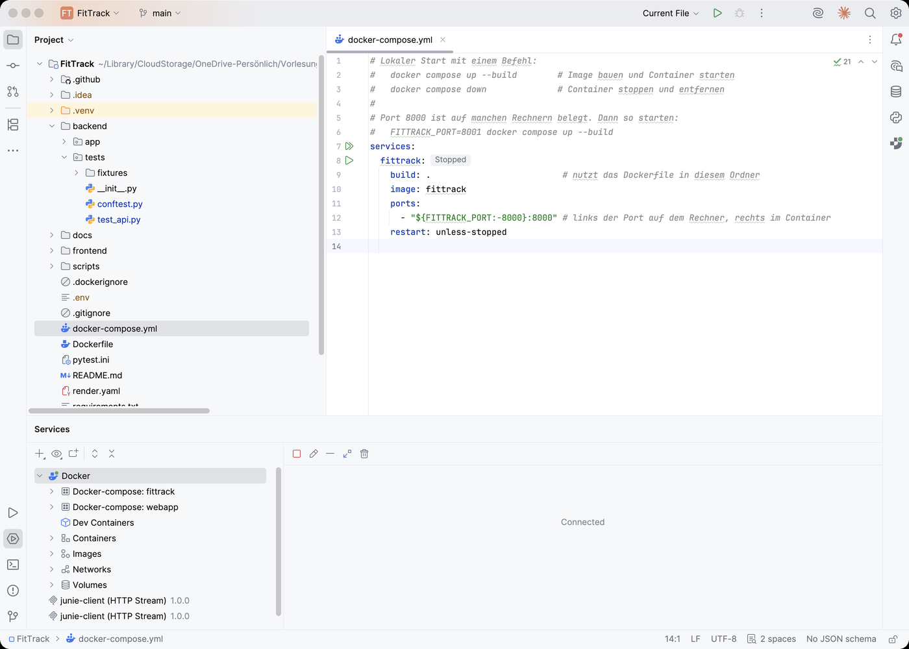

GET /api/workouts liefert Status 200 und eine Liste; jedes Element enthält id, datum, sportart, dauer_min, distanz_km, kalorien.Worum es geht
FitTrack ist eine mobile-first Web-App, die Trainingsdaten auf dem Smartphone anzeigt. Sie ist bewusst klein: vier Funktionen, drei Dateien Frontend, ein Container. Was nicht klein ist, ist das Vorgehen. Die Gruppe durchläuft eine vollständige Iteration: Vision, Stories, Test zuerst, Prompt im Chat, Review, Abnahme am Gerät, Container, Deployment. Die Werkzeuge darin sind austauschbar, die Abfolge ist es nicht.
Produktvision in einem Satz
„FitTrack zeigt mir meine Trainingsdaten auf dem Smartphone, verständlich, aktuell, ansprechend.“ An diesem Satz misst sich jede spätere Diskussion über Umfang. Was ihn nicht stützt, kommt nicht in den Sprint.
flowchart LR
V["Vision"] --> B["Product Backlog
6 User Stories,
US-7 aus dem Review"] --> S1["Sprint 1
Daten und API"] --> S2["Sprint 2
Frontend"] --> S3["Sprint 3
Docker und Abnahme"] --> R["Review und
Retrospektive"]
Die Iteration in Miniatur. Jeder Sprint endet mit einer Abnahme gegen Test und Akzeptanzkriterium.
Die Werkzeugkette
Sechs Werkzeuge, jedes mit einer Aufgabe. Die Installation gehört vor den ersten Termin, im Raum bleibt nur ein kurzer Check.
| Werkzeug | Wofür | Prüfen mit |
|---|---|---|
| Python 3.12 | Backend mit FastAPI, Tests mit pytest, Datenzugriff mit sqlite3 | python3 --version |
| WebStorm mit Python-Plugin | Editor für Backend und Frontend, Terminal, Git, Docker-Anbindung, Datenbankansicht | Plugin „Python“ unter Settings → Plugins |
| Git und GitHub | Stände festhalten, Commit je Story, Push löst später den Deploy aus | git config --global user.name |
| Docker Desktop | Die App als Image bauen und als Container starten | docker run hello-world |
| Claude im Chat | Code vorschlagen lassen, nie ungeprüft übernehmen | Konto bei claude.ai, kostenloses Kontingent reicht |
| LM Studio (optional) | Derselbe Workflow mit einem lokalen Modell | Modell vorab herunterladen |

WebStorm mit dem FitTrack-Projekt. Links der Projektbaum mit backend, frontend und tests, unten das Services-Fenster mit der Docker-Anbindung.
PyCharm geht genauso
Wer PyCharm hat, macht alle Schritte identisch. Der Unterschied zu WebStorm ist nur, welches Plugin von Haus aus dabei ist. In WebStorm kommt Python als Plugin dazu, in PyCharm JavaScript.
Den Starter holen
Der Branch starter im Repository enthält den Ausgangsstand: Ordnerstruktur, Datenbank, Testdaten,
README und genau einen Test, der noch rot ist. Die vier Befehle unten sind der gesamte Setup-Aufwand.
Rot ist richtig
Nach pytest erscheint ModuleNotFoundError: No module named 'app.main'. Der Test in
backend/tests/test_api.py beschreibt, was die App können soll, bevor es den Code gibt. Er wird in
Lab 01 grün.
Was im Starter liegt
Die Struktur ist vorgegeben, damit in der knappen Zeit niemand über Pfade verhandelt. Backend, Frontend und Tests liegen getrennt. Die Datenbank liegt im Backend, ihr Schema daneben.
FitTrack/ ├── backend/ │ ├── app/ │ │ ├── __init__.py │ │ └── data/ │ │ ├── fittrack.db # SQLite-Datenbank, 311 Trainingseinheiten │ │ └── schema.sql # Tabellen sportart und workout, Sicht v_workout │ └── tests/ │ ├── conftest.py # baut die Testdatenbank aus schema.sql und dem Fixture │ ├── fixtures/workouts_klein.sql # 8 Einheiten, von Hand nachrechenbar │ └── test_api.py # ein Test: test_health, noch rot ├── frontend/ # entsteht in Sprint 2 ├── scripts/generate_workouts.py # erzeugt fittrack.db reproduzierbar ├── docs/ # Setup-Anleitung, Checklisten ├── pytest.ini ├── requirements.txt └── README.md # Backlog, Datenmodell, Setup
Zwei Datenbanken, ein Schema
fittrack.db sind die Echtdaten der App. Die Tests bauen bei jedem Lauf aus schema.sql
und workouts_klein.sql eine eigene, temporäre Datenbank mit acht Einheiten. Testdaten sind nicht
Produktionsdaten. Warum das für die Erwartungswerte wichtig ist, zeigt Lab 03.
Micro-Scrum
Scrum wird hier nicht zitiert, sondern auf das eingedampft, was in der verfügbaren Zeit tatsächlich entsteht. Drei Rollen trennen Perspektiven, und das ist der Kern: Wer die Erwartung formuliert, promptet nicht selbst.
Product Owner
Formuliert die User Stories mit Akzeptanzkriterien, entscheidet, was in den Sprint kommt, nimmt ab oder gibt zurück.
Developer
Promptet, liest den Vorschlag, übernimmt ihn in WebStorm und passt ihn an. Verantwortet, dass jede Zeile erklärbar ist.
Quality und Review
Legt die Erwartungswerte fest, pflegt die Tests, führt die Review-Checkliste. Sagt Nein, wenn etwas offen ist.
Die Rollen rotieren über die drei Sprints. Jede Person trägt einmal jede Rolle, damit niemand die Prüfung an eine einzige Person delegiert.
stateDiagram-v2
direction LR
Backlog --> SprintBacklog : in den Sprint gezogen
SprintBacklog --> TestRot : Test aus dem Kriterium
TestRot --> TestGruen : Code geprüft und übernommen
TestGruen --> Review : Demo am Gerät
Review --> Done : PO nimmt ab
Review --> SprintBacklog : PO gibt zurück
Eine Story durchläuft sechs Zustände. Es gibt genau einen Rückweg: Der Product Owner kann im Review zurückgeben.
Definition of Done
Fertig ist eine Liste, die für jede Story gleich lautet. Sie mischt bewusst zwei Nachweisarten: Die Maschine prüft die Tests, der Mensch prüft das Verhalten am Gerät.
Nachweis durch die Maschine
- Code läuft lokal ohne Fehler
- Zugehörige Tests vorhanden und grün (
pytest) - Commit und Push mit Story-Bezug, etwa
feat(US-2): Kennzahlen-Endpunkt
Nachweis durch den Menschen
- Akzeptanzkriterium am Gerät vorgeführt
- Mindestens eine weitere Person hat den Code nach der Review-Checkliste geprüft
Warum beides
Eine grüne Testreihe belegt, dass der Code tut, was die Tests beschreiben. Ob die Tests die Story beschreiben, kann nur ein Mensch beurteilen. Deshalb steht die Demo gleichberechtigt daneben.
Das Product Backlog
Sechs User Stories in derselben Form: Nutzen und Akzeptanzkriterium. Eine siebte, US-7, entsteht in Lab 10 aus dem Semantik-Review des Dashboards. Damit sind sie prompt- und prüfbar zugleich. Bei Zeitnot sind US-1 und US-3 Pflicht, US-2 ist verhandelbar. Diese Entscheidung fällt beim Planen, nicht unter Druck kurz vor dem Review.
US-1 · Daten abrufen. Als Nutzer möchte ich alle meine Trainingseinheiten als JSON abrufen, damit die App sie anzeigen kann. Akzeptanz:
US-2 · Kennzahlen. Als Nutzer möchte ich meine Kennzahlen abrufen, damit ich meinen Fortschritt sehe. Akzeptanz:
GET /api/stats liefert gesamt_km, durchschnitt_km_pro_woche, lieblingssportart, anzahl, korrekt berechnet für die Testdaten.US-3 · Health. Als Entwickler möchte ich einen Health-Endpunkt, damit ich später im Container prüfen kann, ob die App läuft. Akzeptanz:
GET /health liefert {"status": "ok"}.US-4 · Dashboard. Als Nutzer möchte ich die App auf dem Smartphone öffnen und ein übersichtliches Dashboard sehen. Akzeptanz:
GET / liefert die Seite; bei 375 px Breite kein horizontales Scrollen; Karten stapeln sich; Touch-Targets mindestens 44 px.US-5 · Kennzahlen und Liste. Als Nutzer möchte ich meine Kennzahlen und die letzten Trainings sehen. Akzeptanz: Kennzahl-Karten und Liste werden per fetch aus
/api/stats und /api/workouts gefüllt, nichts ist hartkodiert.US-6 · Wochenverlauf. Als Nutzer möchte ich meinen Wochenverlauf als Balkendiagramm sehen und den Zeitraum wählen. Akzeptanz:
GET /api/stats/wochen liefert je Kalenderwoche distanz_km und anzahl, auch für Wochen ohne Training; das Diagramm zeigt diese Daten; Umschalter 8 W / 6 M / 1 J / Alles.Übungen
Vier Übungen: eine Checkliste für den eigenen Rechner, eine an der Konsole, zwei zum Vorgehensmodell.
Zusammenfassung
- Der Starter liegt auf dem Branch
starter. Nach venv undpip installist der erste Test rot, und das ist der Plan. - Drei Rollen trennen Perspektiven: Wer die Erwartung festlegt, promptet nicht selbst. Die Rollen rotieren je Sprint.
- Die Definition of Done verlangt beides: grüne Tests und eine Demo am Gerät, dazu ein Review durch eine zweite Person.
- Sechs Stories mit Akzeptanzkriterien bilden das Backlog, US-7 kommt in Lab 10 aus dem Review dazu. US-1 und US-3 sind Pflicht.
- Zwei Datenbanken, ein Schema: Echtdaten in
fittrack.db, Testdaten als SQL-Datei, die die Tests selbst einspielen.